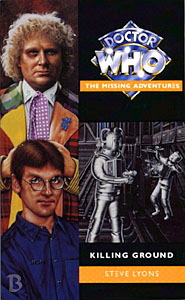

|
Killing Ground
|
BASIC PLOT DOCTOR COMPANIONS MATERIALISATION CIRCUIT Pg 11 The TARDIS materialized on Agora three weeks ago. Pg 211 On the Selachian vessel. Pg 243 In Population Control back on Agora. Pg 245 In space above Agora. PREPARATORY READING CONTINUITY REFERENCES Pg 2 "'The Great Intelligence,' said the Doctor suddenly. 'Autons, Axons, Zygons.'" In order: The Abominable Snowmen, The Web of Fear, Downtime and Millennial Rites (and the Doctor doesn't yet know that the Intelligence will be gone after that adventure); Spearhead from Space, Terror of the Autons, Synthespians™ and Rose; The Claws of Axos; Terror of the Zygons, Shada and The Bodysnatchers. (Note that this is one of the very few occasions that Terror of the Zygons is not referred to as 'The Zygon gambit'.) Pg 3 On Earth: "The air would be breathable without the aid of filters." This squares with Malcolm Hulke's description of the future Earth in The Doomsday Weapon (the novelisation of Colony in Space), although that was set further in the future (and the novelisation is 500 years out from the broadcast story). Pg 6 Cybermen can "kill with their headpieces." This is consistent with the behaviour of the Cybermen from Revenge of the Cybermen, and these are of the same design (the CyberNomads, according to David Banks' Cybermen book). Pg 11 "The pockets of his multi-coloured coat had been emptied (a process which had taken an hour)" The Doctor's pockets may well be dimensionally transcendental, as evidenced on far too many occasions to list. See also Alien Bodies for an explanation. Pg 12 "The Doctor allowed his eyelids to fall and he drifted into a semi-trance [...] Without this Time Lord gift, his situation would have been unbearable." We saw something similar in Terror of the Zygons. Pg 15 Reference to the Mondasian calendar being identical to that of Earth's. The Tenth Planet. Pg 16 "There's no logic in keeping me here just for the pleasure of killing me themselves." Logic, the Cybermen's alleged strength, is a major theme of this book, and this is its first mention. Pg 20 "But first, I want to be sure that you know where your loyalties lie, Overseer 4/3." Probably not deliberate, but I was suddenly put in mind of Paradise Towers. Pg 25 "'I know.' He let a trace of bitterness enter his voice. 'It's a new chap - he's not very good.'" The Doctor refers to Grant, and there's something glorious about the Doctor expecting his companions to act in companion-like ways and Grant failing to do so quite so miserably. Pg 28 "He remembered how he had felt, stepping out of the Doctor's police-box-cum-space-and-time-vessel: the gut-clawing sense of deja vu at the sights and sounds of a world he had forgotten." This book explains the screaming backstory that Grant so visibly displayed in Time of Your Life. Pg 29 "I've always been fascinated by technology; I just feel an unreasoning terror at the sight of... of lumps of metal, pretending to be alive." This, although never named as such (in a moment of continuity restraint), is similar to the robophobia experienced by Poul in The Robots of Death. Pgs 30-31 "'The Cybermen,' he recited, 'originally came from Mondas, Earth's twin planet in the ancient cosmology. They evolved along similar lines to the Tellurians, until a freak accident dislodged their world from its orbit and, eventually, from its solar system. They had to adapt to survive this catastrophe. They turned to cybernetics, replacing body parts as they became unreliable or superfluous.'" A quick summary of Cyberhistory from The Tenth Planet (see also the audio Spare Parts). Earth people were referred to as Tellurians through much of Season 23, particularly in The Two Doctors. Pg 31 "The Time Winds would be too much for his limited mind to handle." We see the Time Winds in Warriors' Gate. Pg 32 "He recalled how Mondas had been destroyed and how the Cybermen's subsequent attempts to invade Earth, using Planet Fourteen as a base, had failed, with massive Cyber casualties." The Tenth Planet, The Moonbase, The Wheel in Space, in the latter of which, an unrecorded adventure featuring the Doctor and Jamie on Planet 14 is referenced. (There is a comic story set on Planet 14 which featured an aged Jamie McCrimmon, who gets killed, and which suggests that Mondas was originally Marinus and the Cybermen evolved from the Voords. No, I don't buy that either.) "Most were actually hibernating in frozen tombs on Telos." The Tomb of the Cybermen, Attack of the Cybermen. "They found themselves in a vicious and protracted war with Voga, the famed planet of gold. They lost and were presumed wiped out - until, three centuries later, a small, isolated group reappeared and tried to take their revenge on the Vogans." Revenge of the Cybermen. "You also put forward a hypothesis that another such group might have reopened the Telosian tombs and helped to forge the new race - the Neomorphs - which proliferated during the twenty-sixth century." The theory was put forward in the Banks book. The Neomorphs themselves were the Cybermen of Earthshock, The Five Doctors, Attack of the Cybermen and Silver Nemesis. Pg 33 "'So, in the year 2191...?' Hegelia prompted. 'They would have recently fought the Vogan War.'" Mentioned in Revenge of the Cybermen. Pg 35 "He'd worked out something was wrong - and he might have known about the Cybermen, I'm not sure. He just went on about how I should face up to what I'd once run away from." This is similar to what the Doctor did to Ace in Ghost Light, although on that occasion he didn't ask her permission. Pg 36 "Basically, my town was caught in a transdimensional warp and I ended up on a television station three systems away. [...] A couple of days ago, we were fighting a living, homicidal computer virus." All in Time of Your Life. Pg 37 "Jolarr heard the briefest of mechanical splutters. When he looked, the ship had disappeared. He knew that it had slipped into interstitial time." Interstitial time was relevant in The Time Monster and Falls the Shadow. Pg 45 "He recognized the advertising drones which peddled burgers in Newer York, and Bloodsoak Bunny." In the guide to Time of Your Life, I made a facetious comment to the effect that, with New London and New Tokyo being locations on New Earth, was there also a New New York. Turns out I was almost right. Bloodsoak Bunny also appeared in Time of Your Life. Pgs 47-48 "It's been a hard time for Earth since 2157." The Dalek Invasion of Earth is presumably what the Doctor has in mind. Pg 48 "'Cowards die many times before their deaths, Ben Taggart!' the Doctor bellowed after him. Taggart knew the Shakespearean quote well." It's possible that the Doctor was there when Shakespeare wrote it - see City of Death. And we love it when the Doctor quotes Shakespeare. Pg 60 "'The same Doctor who is spoken of in the history of the Cybermen?' 'I rather hoped they would be spoken of in mine.' 'You repelled the invasion of Earth in 1970?'" The Invasion, and a rather wonderful line from the Doctor there. "Not to mention 1986, when Mondas returned to its solar system." The Tenth Planet. "You are the same Doctor who sealed the tombs on Telos?" The Tomb of the Cybermen. "'You fought them in Antartica when they tried to sabotage the FLIPback project!' 'I really don't think you want to be telling me that.'" He hasn't done this yet, of course, but he will in Iceberg. Pg 61 "'I remember you now from the description. Of your jacket, at least. You are the one who returned to Telos when the Cybermen discovered time travel.' 'Guilty as charged.'" Attack of the Cybermen. And see Continuity Cock-Ups. Pg 62 Grant chooses the pseudonym of Stuart Revell, his deceased friend from Time of Your Life. Pg 64 Mention of Rassilon. "If I die now because of you - before I've averted this flipflop disaster, or whatever it was - you might not have a present to return to." Iceberg. Pg 73 "'The only way to trigger the release mechanism is to input a six-figure combination which changes to a different, random one each second. The Cybermen could do it by communing with the device's AI circuits, but my only hope is to keep guessing.' Hegelia pursed her lips. 'So what you are saying is that you have an ongoing series of non-cumulative one in a million chances to escape?' 'Exactly.'" Last time (Time of Your Life), Lyons got the calculation of six figures being a million-to-one chance wrong. On this occasion, it's correct. It's almost like he's put it in here to prove that he realized he'd got it wrong before. Pg 76 The chapter title is 'Return of the Cybermen', which was the working title for Revenge of the Cybermen, Earthshock and Attack of the Cybermen. Pg 81 Name-check for the companions of the Sixth Doctor: Peri, Mel and Grant. No mention of Evelyn Smythe (Instruments of Darkness) or Frobisher (Mission: Impractical), however. Pg 85 "Was it Winston Churchill who talked about evil flourishing when good men choose to do nothing?" The Doctor met Winston Churchill in Players and has some contact with him in The Shadow in the Glass. The original quote is anonymous, which is why the Doctor doesn't actually know who said it. Pg 94 The cybership: "It was shaped approximately like an old Earth rocket. A pair of angled fins protruded from a bulky rear compartment, whilst a sleeker forward section (currently at the top) culminated in a slightly bulbous cockpit housing." This is consistent with the Cybership from Revenge of the Cybermen. Pg 98 "Its design was familiar: he had encountered representatives of this particular offshoot in his fourth incarnation, on Nerva Beacon." Revenge of the Cybermen. Pg 104 "The Cyberleader loomed over him, adopting an exaggerated posture which suggested anger at the questioning of its edict. It could have felt no such emotion, of course, but the simulation was clearly affected for the sake of intimidation. It was successful." Lyons works hard to explain the alleged 'emotions' that Cybermen in the past have been prone to. This 'emotionalism' was at its most prevalent in The Moonbase and Revenge of the Cybermen. Pg 107 "His key - which the Overseers had confiscated - was in the lock. Not that they would have been able to use it. It would only respond to the Doctor's unique molecular structure." The Doctor has clearly been messing with the isomorphic controls again - see Pyramids of Mars and Millennial Rites. Pg 130 "Remember your history, ArcHivist. These Cybermen have suffered a heavy defeat." The Vogan War, as alluded to in Revenge of the Cybermen. Pg 134 "'The way you put your hands on your hips. I know its meant to make you look fierce, but it does nothing for you, believe me.' Almost self-consciously, the Cyberleader shifted its stance. 'You must see some value in emotional responses then,' the Doctor pressed on, 'to simulate them as you do. Pride, arrogance, scorn, anger.'" ... And all of those just in Revenge of the Cybermen. The excuse is quite good (Pg 135: "The intimidatory effect upon organic beings can be useful.") albeit a little forced. Pg 158 "Madrox flung up his arms in an instinctive gesture, only to have both caught, just below the wrists. He stared imploringly into the implacable face of his captor, but felt the pressure of the restraining fists increase all the same. 'Please, don't...' he begged tearfully, but choked back further entreaties as a shooting pain precluded speech. Blood welled between metal fingers." This is a deliberate reprise of the famously violent scene in Attack of the Cybermen, demonstrating how similar the Bronze Knights are to their erstwhile masters. Pg 165 "'Can I do anything?' asked Grant, as the Doctor began to tap in a series of instructions at lightning speed. 'Make the tea, if you can find any.' 'That's what you said on the Network.' 'You still haven't made any!'" Time of Your Life. If this is how the Doctor was generally treating Grant (and that's certainly how it appears), it's no wonder this particular companion didn't stick around for terribly long. At least the Doctor's an equal-opportunity tea demander. Makes you wonder how Peri lasted so long. Pg 170 "For a second, he thought the man was dead. Then Ben Taggart's eyes flickered open and a half-smile twisted his face." Grant meeting his father mid-Cyber-conversion brings to mind similar scenes with Lytton in Attack of the Cybermen, as well as Natasha meeting her father as a semi-Dalek in Revelation of the Daleks. Pg 179 "They're back - and they're using what, from the radar image, seems to be a Selachian warcraft." The Selachians appeared in The Murder Game and The Final Sanction, both also by Steve Lyons. Pg 200 "Then Peter was very frightened, because the lever he had pulled had opened the Cybermen's frozen tomb. He had woken the sleeping beast and it was coming out to get him." This, and a similar passage further down the page, is part of a rather charming retelling of The Tomb of the Cybermen in children's book style. Pg 201 "My eyes have been scooped out and the sockets filled with ruby ocular crystals." Probably one of the most gruesome sections of any Doctor Who book anywhere is the Cyber conversion process as detailed in the pages around this one. Pg 216 "The Doctor could hold his breath for several minutes." As we saw in The Caves of Androzani, among other stories. Pgs 216-217 "This Time Lord trance was deeper and more dangerous than the one in which he'd passed time in custody - but, in such a state, he could suspend his breathing for an indefinite period." As in Terror of the Zygons. Pg 220 "'Oh, well done! "A logical assumption, Captain"!'" The Doctor is quoting the original Star Trek series. I do wish he wouldn't do that. Pg 221 "Since his trial by the Time Lords, the Doctor had fought to keep the naturally aggressive nature of his present incarnation in check." The Trial of a Time Lord. This also ties into Head Games, with the sixth Doctor fighting against his own impulses and may also be a reference to the fact that the tone of the series changed between seasons 22 and 23, due to accusations of increased violence. Pg 224 "Your Cybermen have more organic components than any model since the original Mondans." Hence the radically changed design of Cybermen after The Tenth Planet. The term 'Mondans' is unusual, the more common term being 'Mondasians', but this is only in literature about the programme; 'Mondans' is never seen to be the wrong designation in the broadcast stories, and they may well be interchangeable terms anyway. "Before you caught me, I fixed the plasma beam to discharge a lethal radioactive backblast." The Cybermen were seen to be vulnerable to radiation in The Moonbase. "'Lethal, that is, to you!' 'And to you also, Doctor.' 'I know.'" The Doctor's plan is typical of his Sixth incarnation, in that it is semi-suicidal. Given that this is an MA, one wonders how much of his actions are actually being dictated by a Seventh Doctor who is desperate to get out. Pg 233 "He remembered lying on the TARDIS floor, paralysed by the extensive damage done to his third form in the Great One's radioactive caves on Metebelis. The regeneration had been long in coming." Planet of the Spiders. Timewyrm: Revelation suggests that the regeneration had actually been ten years in coming. "The TARDIS was two metres above, but it might as well have been on the second moon of Thoros Beta." Thoros Beta was the location of the action in The Trial of a Time Lord episodes 5-8 (Mindwarp). Reference to Peri and Angela, the latter from Time of Your Life. Pgs 233-234 "He had allowed so many deaths on the Network." Time of Your Life. Pg 234 "He had been right to cease his interference, to settle on Torrok." Time of Your Life again. "A way to ensure that the Valeyard, his premonition of an evil future self, never came to pass." The Trial of a Time Lord. "One way to end it for good; quite possibly for everybody's good. Just let go of the rope." Again with the suicidal, although the Sixth Doctor never quite goes through with it. (As an aside, the nature of the Sixth Doctor's tenure in the programme make him a really interesting character to write for, as he is one of the only Doctors who can be written with serious character development over time. This is possibly why so many of the Sixth Doctor books are so good when compared with those of, say, the Fifth.) Pg 242 "He wasn't quite sure how he had managed to climb the rope and make his way across the hospitality deck, but he felt pride at his own resolve and stamina." It's likely he had a helping hand from the nascent seventh Doctor, who wouldn't allow the sixth to commit suicide and thus avert his own existence. "He had not compromised his lofty principles." See Head Games for more discussion on this. "There was too much left for the sixth Doctor to do - and he was ready to do it, despite the spectre which hung over his future." This is presumably the Valeyard, but could also be taken to refer to the mid-1980s cancellation crisis, during which this book is set. "'I'm still the Doctor,' he muttered to himself through cracked and parched lips, 'whether I like it or not.'" Paraphrase of his final line from The Twin Dilemma. Pg 246 "'She can do it,' said Grant. 'I know she can.' 'I'll give her one thing' the Doctor conceded with a hopeful grin. 'It's a logical idea.' He turned to the console and began to set new co-ordinates." And with that line, we never see Grant Markham again. OLD FRIENDS AND OLD ENEMIES NEW FRIENDS AND NEW ENEMIES Maxine Carter, Ted Henneker (who becomes a Bronze Knight eventually known as One) ArcHive student Jolaar.
CONTINUITY COCK-UPS PLUGGING THE HOLES [Fan-wank theorizing of how to fix continuity cock-ups] FEATURED ALIEN RACES The ArcHivists, who are generally humanoid, but have deep, black, almond-shaped eyes. The Bronze Knights, latterday Agoran not-quite Cybermen. Tan metal, six feet tall, piston-like limbs and packing a gun. Robot-like heads and emotionless voices. Eventually, they leave Agora to go on a Cyberhunt, and are never seen again. FEATURED LOCATIONS Agora, in the Centraxis system, during a rebellion against the Cybermen in the year 2176. Agora again (the bulk of the action), 2191. The area includes Population Control, the rebel base and various accommodation blocks. There is also a flashback (Pg 109) to Agora in 2178. The Arc University, centuries (Pg 31) in the future. This comes from the ArcHivists of David Banks' seminal tome, Cybermen. The Selachian vessel which the Cybermen, scavengers that they are, are currently using, in orbit above Agora. IN SUMMARY - Anthony Wilson |
|
 |